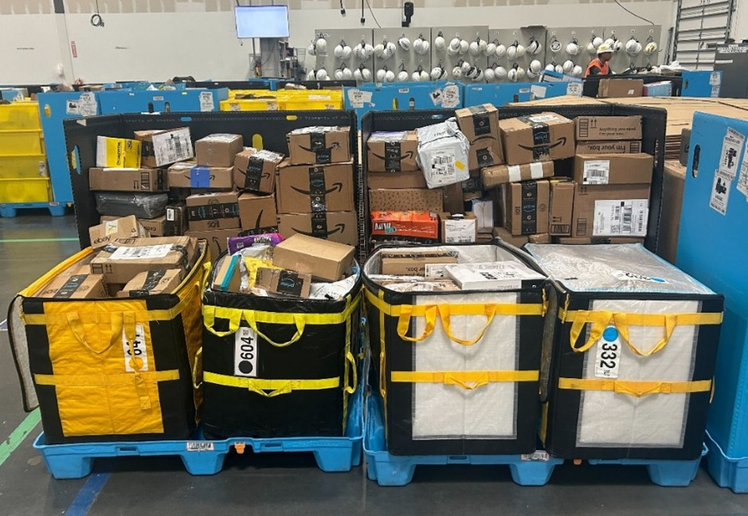
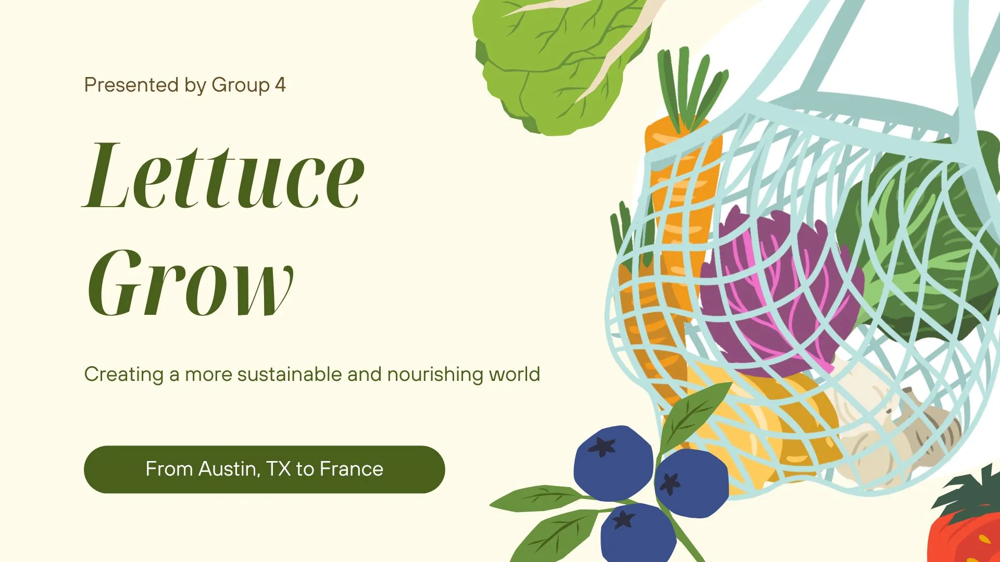
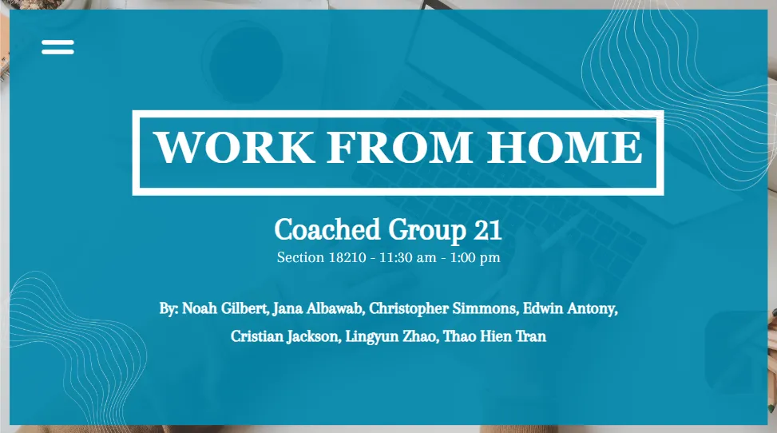

I’m Lingyun Zhao, a recent graduate from the University of Houston, where I earned
my Bachelor of Business Administration in Marketing and Management with Cum Laude honors in December 2024.
Incoming Master of Science in Analytics student at the Georgia Institute of Technology, starting in the Fall 2025 semester.
Feel free to connect with or contact me through my socials below!


About Me
I'm genuinely passionate about data analytics, digital marketing, web development, UI design,
and software development. I also have a strong curiosity for exploring and mastering programming languages.Outside
of my professional interests, I enjoy immersing myself in old-school and street art and have a love for R&B, funk, soul, and popping dance.
View My Art Portfolio >


As a Yelp Community Intern, I organize and coordinate community events,
create engaging content, design digital assets for marketing, and manage media production for promotional materials.
I also analyze social media and CRM data to track campaign trends and engagement.
Oct 2024 – Present
I supervised over 1,000 associates as an Area Manager Intern at Amazon,
ensuring efficient operations and safety compliance, facilitated cross-departmental collaboration,
and implemented strategies to improve operational efficiency and safety compliance. I also analyzed labor
and safety data to support cost reduction and safety improvement initiatives.
May 2024 – July 2024
As a Marketing Intern at Mind4Youth, I created digital content for social media,
built relationships with partner organizations, and tracked performance metrics to optimize mental health awareness campaigns.
Feb 2024 – March 2024
View My Resume >

Implemented the Meshbag project at Amazon fulfillment center DPA7 to optimize
unloader usage, reduce costs by $107,188 annually, decrease injury risks by 10-15%, maximize space utilization, and minimize operational
workloads through cross-departmental collaboration.

Planned Lettuce Grow's expansion into France by leveraging the country's strong commitment
to sustainability and high demand for fresh ingredients, aligning with the mission to inspire healthier lifestyles through the easy-to-use,
self-watering Farmstand vertical garden system.

Advocated for remote work as a mutually beneficial strategy for companies
and employees, emphasizing cost savings, increased revenue, improved employee well-being, and enhanced adaptability to accommodations.